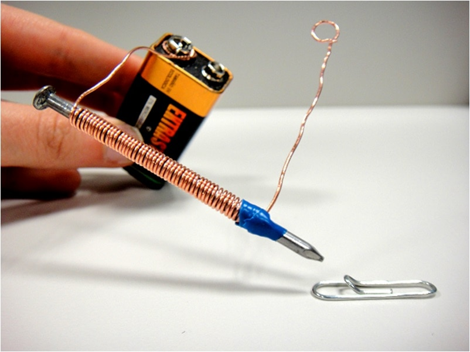

Oque é um Electroiman ?
Um eletroímã é um dispositivo que gera um campo magnético quando uma corrente elétrica flui através de um fio enrolado em volta de um núcleo de ferro. Diferente dos ímãs permanentes, ele pode ser ligado e desligado, e sua força pode ser controlada. Isso o torna útil em várias aplicações, como em motores elétricos, guindastes eletromagnéticos e campainhas.
